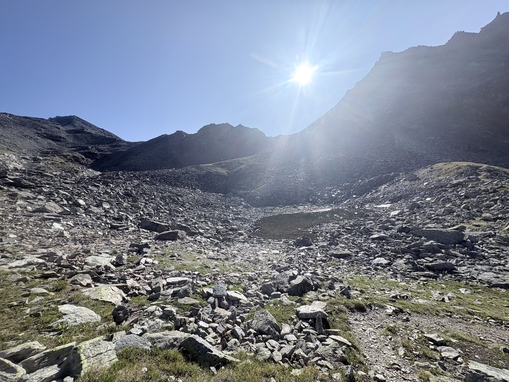
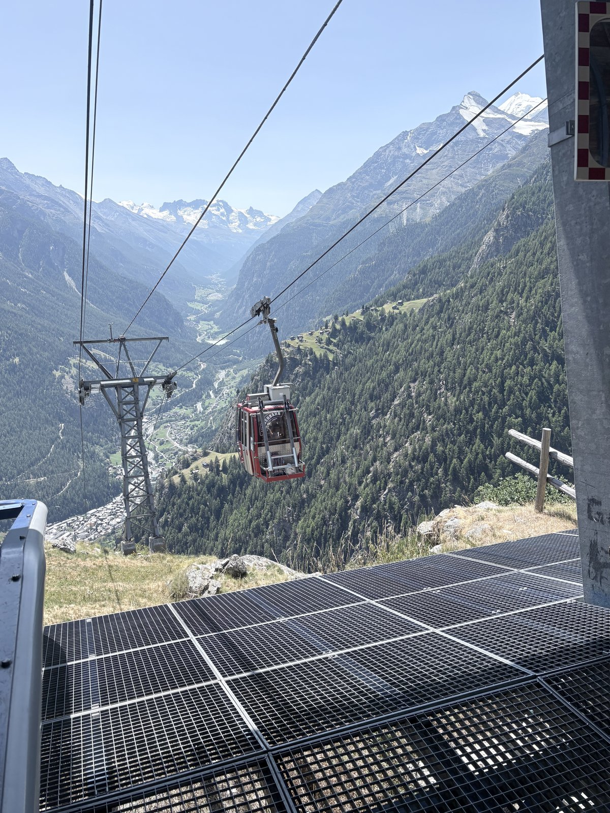
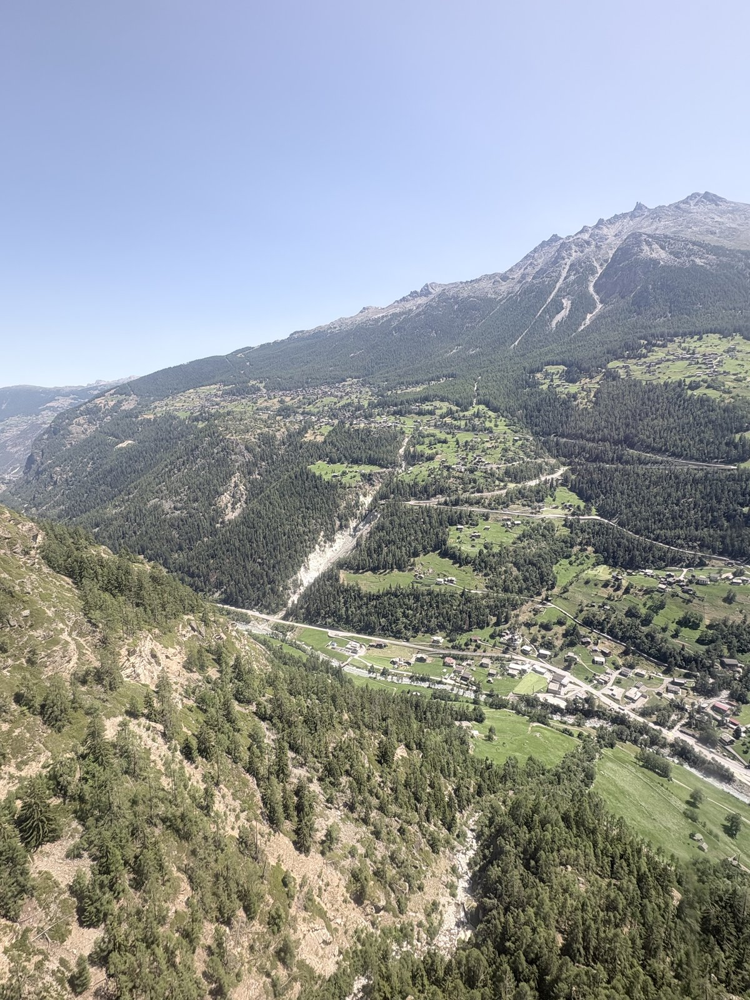
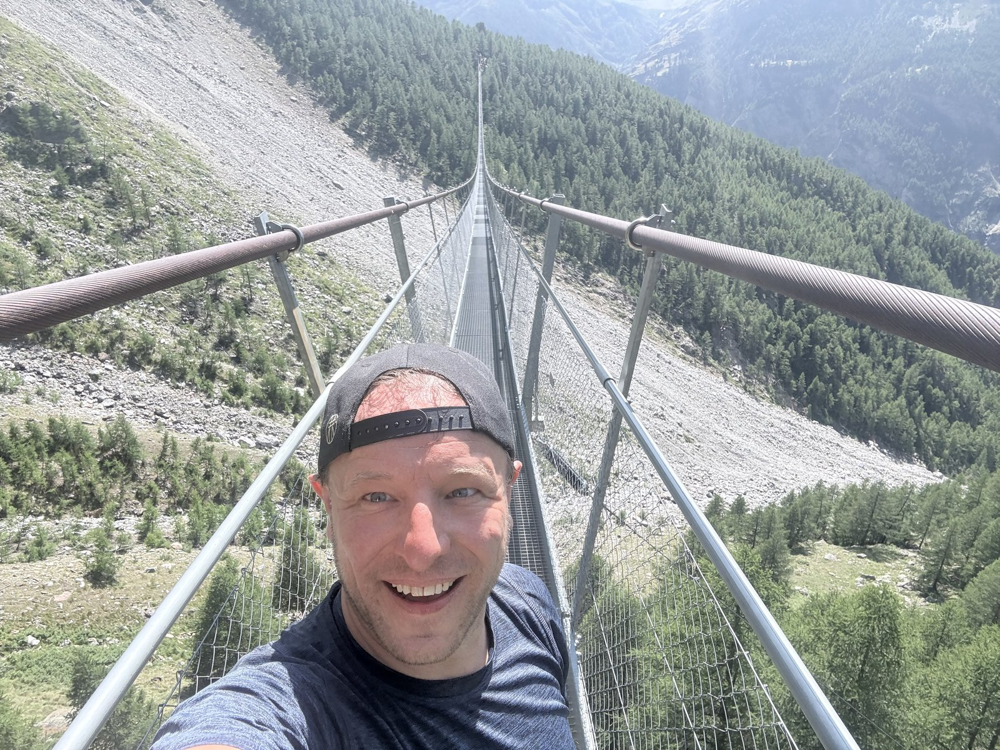

A day with two very different halves. Part 1: on foot from Gruben (1,829 m) over the Augstbordpass (2,894 m) down to the car-free hamlet of Jungu (12.5 km, 5:50 h, 1,164 m of ascent, 1,003 m of descent), then cable car down and onward by the Mattertal railway to Randa. Part 2: from Randa on the Europaweg up to the Europahütte – only 3.9 km, but 860 m of ascent in 2:35 h, with virtually no counter-descent. We covered both parts exactly as planned, whether on foot or by transport.
Over the Augstbordpass: From Gruben the trail first climbs through the upper Turtmanntal, then switchbacks up to the Augstbordpass. At the top, a bare high plateau covered in scree and boulders awaits, dotted with small meltwater pools – the Augstbordpass traditionally links the Turtmanntal with the Mattertal and is one of the classic stages of the Chamonix-to-Zermatt Haute Route.

Bare pass terrain at the Augstbordpass – scree, a small pool, low morning sun.
Jungu and the cable car: On the north side of the pass, the descent leads to the small, car-free hamlet of Jungu – there's no road access here, only a small cable car down into the Mattertal. The ride through steep forest, with snow-capped peaks in the background, is a welcome break for the legs.

Down from Jungu by the small cable car – the only connection this car-free hamlet has to the valley.
By train to Randa: From the top station above St. Niklaus, the view drops far down onto the village on the valley floor, with the tracks of the Mattertal railway running right through it. Instead of walking the whole valley floor on foot, the train takes over from here up to Randa – a welcome shortcut that saves the legs for the steep afternoon ahead.

Looking down on St. Niklaus in the Mattertal – from here the train carries us onward to Randa.
Randa and the Europaweg: In Randa (1,407 m) the second, short but punchy part of the day begins: the Europaweg, a spectacular balcony trail high above the Mattertal with views of the north face of the Weisshorn and, further on, the Matterhorn. In just 3.9 km it climbs 860 m – with almost no let-up.
Charles Kuonen suspension bridge: The afternoon's highlight and thrill in one – the 494 m long suspension bridge spanning the Grabengufer ravine up to around 85 m above the ground. It opened in 2017 after the previous bridge was damaged by a rockfall, and at its opening it was the longest pedestrian suspension bridge in the world. It sways noticeably in the wind – for anyone comfortable with heights, one of the most spectacular views on the entire route.

Halfway across the suspension bridge – the Grabengufer below us, nothing but air all around.
Arrival at the Europahütte: Beyond the bridge the climb on the Europaweg continues a while longer until the Europahütte (2,220 m) is reached – a well-earned stage destination after a day of a pass, a cable car, a train and one of the most spectacular bridges in the Alps.